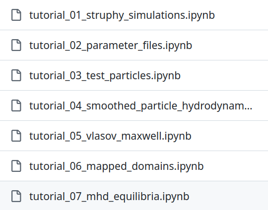
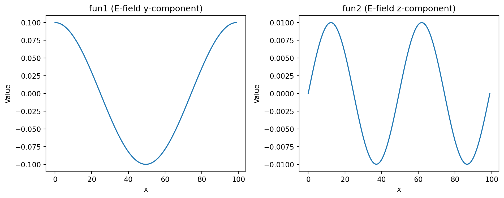

['ColdPlasma',
'ColdPlasmaVlasov',
'DeterministicParticleDiffusion',
'DriftKineticElectrostaticAdiabatic',
'GuidingCenter',
'HasegawaWakatani',
'LinearExtendedMHDuniform',
'LinearMHD',
'LinearMHDDriftkineticCC',
'LinearMHDVlasovCC',
'LinearMHDVlasovPC',
'LinearVlasovAmpereOneSpecies',
'LinearVlasovMaxwellOneSpecies',
'Maxwell',
'Poisson',
'PressureLessSPH',
'RandomParticleDiffusion',
'ShearAlfven',
'TwoFluidQuasiNeutralToy',
'VariationalBarotropicFluid',
'VariationalCompressibleFluid',
'VariationalPressurelessFluid',
'ViscoResistiveDeltafMHD',
'ViscoResistiveDeltafMHD_with_q',
'ViscoResistiveLinearMHD',
'ViscoResistiveLinearMHD_with_q',
'ViscoResistiveMHD',
'ViscoResistiveMHD_with_p',
'ViscoResistiveMHD_with_q',
'ViscousEulerSPH',
'ViscousFluid',
'Vlasov',
'VlasovAmpereOneSpecies',
'VlasovMaxwellOneSpecies']Struphy 3.0
Structure-Preserving
Hybrid Code
HPC Plasma Modeling with Python
Stefan Possannera, Max Lindqvista, Byung-Kyu Na, Dominik Bell, Valentin Carlier, Florian Holderied
aMax Planck Institute for Plasma Physics, Garching, Germany
Struphy is …
… an open-source Python package for solving partial differential equations (PDEs), primarily designed for plasma physics — though not limited to it.
- 💯% Python — Write models in clean, readable Python.
- 💥 Pyccel-powered kernels — High-performance Fortran code generated via Pyccel.
- 💻 Simple API — Run complex plasma simulations with minimal boilerplate.
- 🌐 Open-source & community-driven — Built for collaboration and accessibility.
Numerical methods
Particle-in-cell (PIC) method for kinetic models:
\[ f(t, x, v) = \sum_k w_k\, \delta(x - x_k(t))\, \delta(v - v_k(t)) \]
Finite element exterior calculus (FEEC) for fluid/field variables:
\[ \mathbf E(t, x) = \sum_i e_i(t)\, \mathbf \Lambda^1_i(x)\,, \qquad \mathbf B(t, x) = \sum_i b_i(t)\, \mathbf \Lambda^2_i(x) \]
Smoothed Particle Hydrodynamics (SPH) for fluid models:
\[ n(t, x) = \sum_k w_k\, W(x - x_k(t))\,,\qquad \mathbf u(t, x) = \sum_k \frac{w_k}{n(t, x_k(t))}\, \mathbf v_k(t)\, W(x - x_k(t)) \]
Struphy provides MPI/OpenMP data structures for these methods - and hopefully others in the future!
Getting the code
Installation Options
- Install on bare metal (Linux/macOS)
- From PyPI (recommended)
- From source (for development)
- Use Docker (cross-platform)
- Run tutorials on Binder (cloud-based)
Install on bare metal (Linux/macOS)
- From source (for development):
Use Docker (cross-platform)
- Pull the latest image from Docker Hub and run it:
Run tutorials on Binder (cloud-based)
🌐 Tutorials: github.com/struphy-hub/struphy-tutorials

We will run through the first few tutorials together, but feel free to explore the rest on your own time!
Getting started
Models (PDEs)
Model Info
Maxwell's equations in vacuum for electromagnetic field evolution.
This model simulates the propagation of electromagnetic waves in vacuum using Maxwell's equations without sources. It uses a finite element exterior calculus (FEEC) formulation with the electric field in H(curl) and the magnetic field in H(div) spaces.
Governing Equations
Ampère's law (no current):
∂𝐄∂t - ∇×𝐁 = 0
Faraday's law:
∂𝐁∂t + ∇×𝐄 = 0
Normalization
Fields are normalized such that:
Ê = c B̂
where c is the speed of light.
Species
em_fields.e_field- Electric field (H(curl) space)em_fields.b_field- Magnetic field (H(div) space)
Propagators
struphy.propagators.propagators_fields.Maxwell- Time integration scheme
Scalar Quantities
The following quantities are tracked during simulation:
- Electric energy:
EE = ½ ∫ |𝐄|² dV - Magnetic energy:
EB = ½ ∫ |𝐁|² dV - Total energy:
Eₜₒₜₐₗ = EE + EB
Model Properties
- Model type: Toy
- Velocity scale: Speed of light
- Bulk species: None
See Also
struphy.models.base.StruphyModel- Base class for all Struphy modelsstruphy.propagators.propagators_fields.Maxwell- Maxwell propagator implementation
Examples
Create and initialize a Maxwell model:
from struphy.models.maxwell import Maxwell
model = Maxwell()
# Fields are accessible via:
# model.em_fields.e_field
# model.em_fields.b_fieldCreate a Simulation
SIMULATION PARAMETERS:
Model:
Maxwell
em_fields:
e_field: FEECVariable (Hcurl)
b_field: FEECVariable (Hdiv)
Parameter file path:
None
Environment options:
out_folders: /home/IPP-AD/spossann/git_repos/2026_SIAM_Berlin
sim_folder: sim_1
restart: False
max_runtime: 300
save_step: 1
sort_step: 0
num_clones: 1
profiling_activated: False
profiling_trace: False
path_out: /home/IPP-AD/spossann/git_repos/2026_SIAM_Berlin/sim_1
Base units:
x: 1.0 m
B: 1.0 T
n: 1.0 1e20/m^3
kBT: None keV
Time stepping options:
dt: 0.01
Tend: 0.03
split_algo: LieTrotter
Domain:
Cuboid
l1: 0.0
r1: 1.0
l2: 0.0
r2: 1.0
l3: 0.0
r3: 1.0
Fluid equilibrium:
None
Grid:
Nel: (24, 10, 1)
mpi_dims_mask: (True, True, True)
Derham options:
p: (1, 1, 1)
spl_kind: (True, True, True)
dirichlet_bc: ((False, False), (False, False), (False, False))
nquads: None
nq_pr: None
polar_ck: -1
local_projectors: False
Instance of simulation for model Maxwell ...
METADATA:
platform: linux-x86_64
python version: 3.12
model name: Maxwell
parameter file: None
output folder: /home/IPP-AD/spossann/git_repos/2026_SIAM_Berlin/sim_1
MPI processes: 1
use MPI.COMM_WORLD: (True,)
number of domain clones: 1
restart: False
max wall-clock [min]: 300
save interval [steps]: 1
... Done.Run
Starting simulation run for model Maxwell ...
Removed existing folder /home/IPP-AD/spossann/git_repos/2026_SIAM_Berlin/sim_1/post_processing
Removed existing file /home/IPP-AD/spossann/git_repos/2026_SIAM_Berlin/sim_1/data/data_proc0.hdf5
PROPAGATOR OPTIONS:
Options for propagator 'Maxwell':
algo: implicit
solver: pcg
precond: MassMatrixPreconditioner
solver_params: SolverParameters(tol=1e-08, maxiter=3000, info=False, verbose=False, recycle=True)
butcher: None
INITIAL CONDITIONS:
Variable 'e_field' of species 'EMFields' - no background.
Variable 'e_field' of species 'EMFields' - no perturbation.
Variable 'b_field' of species 'EMFields' - no background.
Variable 'b_field' of species 'EMFields' - no perturbation.
Allocating simulation data ...
DERHAM:
number of elements: (24, 10, 1)
spline degrees: (1, 1, 1)
periodic bcs: (True, True, True)
hom. Dirichlet bc: ((False, False), (False, False), (False, False))
GL quad pts (L2): None
GL quad pts (hist): None
MPI proc. per dir.: [1, 1, 1]
use polar splines: False
domain on process 0: [ 0. 1. 24. 0. 1. 10. 0. 1. 1.]
WARNING: Class "BasisProjectionOperators" called with p=(1, 1, 1) (interpolation of piece-wise constants should be avoided).
Allocated SplineFuntion 'e_field' in space 'Hcurl'.
Allocated SplineFuntion 'b_field' in space 'Hdiv'.
Assembling matrix of WeightedMassOperator "M1" with V=Hcurl, W=Hcurl.
Assemble block (0, 0)
Assemble block (1, 1)
Assemble block (2, 2)
Done.
Assembling matrix of WeightedMassOperator "M2" with V=Hdiv, W=Hdiv.
Assemble block (0, 0)
Assemble block (1, 1)
Assemble block (2, 2)
Done.
Allocated propagator 'Maxwell'.
... Done.
PLASMA PARAMETERS:
Plasma volume: 1.000e+00 m³
Transit length: 1.000e+00 m
Avg. magnetic field: nan T
Max magnetic field: 0.000e+00 T
Min magnetic field: 0.000e+00 T
Rank 0: executing run() for model Maxwell ...
INITIAL SCALAR QUANTITIES:
electric energy: 0.00e+00
magnetic energy: 0.00e+00
total energy: 0.00e+00
START TIME STEPPING WITH 'LieTrotter' SPLITTING:
time step: 1/3
normalized time: 1.00e-02 / 3.00e-02
physical time [s]: 3.34e-11 / 1.00e-10
wall clock time [s]: 0.2779
last step duration [s]: 0.0052
electric energy: 0.00e+00
magnetic energy: 0.00e+00
total energy: 0.00e+00
time step: 2/3
normalized time: 2.00e-02 / 3.00e-02
physical time [s]: 6.67e-11 / 1.00e-10
wall clock time [s]: 0.2877
last step duration [s]: 0.0049
electric energy: 0.00e+00
magnetic energy: 0.00e+00
total energy: 0.00e+00
time step: 3/3
normalized time: 3.00e-02 / 3.00e-02
physical time [s]: 1.00e-10 / 1.00e-10
wall clock time [s]: 0.2969
last step duration [s]: 0.0044
electric energy: 0.00e+00
magnetic energy: 0.00e+00
total energy: 0.00e+00
Time steps done: 3
wall-clock time of simulation [sec]: 0.3048574924468994
Struphy run finished.Set initial conditions
Check what the perturbations look like:
from matplotlib import pyplot as plt
import numpy as np
fig, axes = plt.subplots(1, 2, figsize=(10, 4))
x = np.linspace(0, 1, 100)
# Plot 1: First component in x-direction
axes[0].plot(fun1(x, 0.5, 0.5))
axes[0].set_title("fun1 (E-field y-component)")
axes[0].set_xlabel("x")
axes[0].set_ylabel("Value")
# Plot 2: Add your second plot
axes[1].plot(fun2(x, 0.5, 0.5))
axes[1].set_title("fun2 (E-field z-component)")
axes[1].set_xlabel("x")
axes[1].set_ylabel("Value")
plt.tight_layout()
Define new sim parameters
Create a new simulation
The following simulation will inherit all the initial conditions and parameters from sim, except for the ones we explicitly override.
SIMULATION PARAMETERS:
Model:
Maxwell
em_fields:
e_field: FEECVariable (Hcurl)
b_field: FEECVariable (Hdiv)
Parameter file path:
None
Environment options:
out_folders: /home/IPP-AD/spossann/git_repos/2026_SIAM_Berlin
sim_folder: sim_1
restart: False
max_runtime: 300
save_step: 1
sort_step: 0
num_clones: 1
profiling_activated: False
profiling_trace: False
path_out: /home/IPP-AD/spossann/git_repos/2026_SIAM_Berlin/sim_1
Base units:
x: 1.0 m
B: 1.0 T
n: 1.0 1e20/m^3
kBT: None keV
Time stepping options:
dt: 0.1
Tend: 0.3
split_algo: LieTrotter
Domain:
Cuboid
l1: 0.0
r1: 1.0
l2: 0.0
r2: 1.0
l3: 0.0
r3: 1.0
Fluid equilibrium:
None
Grid:
Nel: (32, 1, 1)
mpi_dims_mask: (True, True, True)
Derham options:
p: (3, 1, 1)
spl_kind: (True, True, True)
dirichlet_bc: ((False, False), (False, False), (False, False))
nquads: None
nq_pr: None
polar_ck: -1
local_projectors: False
Instance of simulation for model Maxwell ...
METADATA:
platform: linux-x86_64
python version: 3.12
model name: Maxwell
parameter file: None
output folder: /home/IPP-AD/spossann/git_repos/2026_SIAM_Berlin/sim_1
MPI processes: 1
use MPI.COMM_WORLD: (True,)
number of domain clones: 1
restart: False
max wall-clock [min]: 300
save interval [steps]: 1
... Done.You can compare sim objects
Run and post process
Run:
Use the pproc method for flexibility in post-processing and visualization:
Post-processing path /home/IPP-AD/spossann/git_repos/2026_SIAM_Berlin/sim_1
Reading hdf5 data of following species:
em_fields:
b_field: <HDF5 group "/feec/em_fields/b_field" (3 members)>
e_field: <HDF5 group "/feec/em_fields/e_field" (3 members)>
Creation of Struphy Fields done.
Evaluating fields ...
Creating vtk in /home/IPP-AD/spossann/git_repos/2026_SIAM_Berlin/sim_1/post_processing/fields_data ...
No kinetic data found in hdf5 file, skipping post-processing of kinetic data.Load plotting data
Loading post-processed plotting data:
Data path: /home/IPP-AD/spossann/git_repos/2026_SIAM_Berlin/sim_1/post_processing
Files in /home/IPP-AD/spossann/git_repos/2026_SIAM_Berlin/sim_1/post_processing/fields_data/em_fields: ['e_field_log.bin', 'b_field_log.bin']
The following data has been loaded:
grids:
self.t_grid.shape =(4,)
self.grids_log[0].shape =(33,)
self.grids_log[1].shape =(2,)
self.grids_log[2].shape =(2,)
self.grids_phy[0].shape =(33, 2, 2)
self.grids_phy[1].shape =(33, 2, 2)
self.grids_phy[2].shape =(33, 2, 2)
self.spline_values:
em_fields
e_field_log
b_field_log
self.orbits:
self.f:
self.n_sph:
Inspect data types
type(self.data) = <class 'dict'>
len(self.data) = 4
key = np.float64(0.0) shape = [(33, 2, 2), (33, 2, 2), (33, 2, 2)]
key = np.float64(0.1) shape = [(33, 2, 2), (33, 2, 2), (33, 2, 2)]
key = np.float64(0.2) shape = [(33, 2, 2), (33, 2, 2), (33, 2, 2)]
key = np.float64(0.3) shape = [(33, 2, 2), (33, 2, 2), (33, 2, 2)]Plot snapshots
fig, axes = plt.subplots(4, 3, figsize=(15, 12))
for n, (time, data) in enumerate(e_field.data.items()):
# Plot 1: First component in x-direction
axes[n, 0].plot(data[0][:, 0, 0])
axes[n, 0].set_title(f"E_1 (x-direction) at time {time}")
axes[n, 0].set_xlabel("x")
axes[n, 0].set_ylabel("Value")
axes[n, 0].set_ylim(-1.5e-1, 1.5e-1) # Set y-limits for better comparison across time steps
# Plot 2: Add your second plot
axes[n, 1].plot(data[1][:, 0, 0])
axes[n, 1].set_title(f"E_2 (x-direction) at time {time} ")
axes[n, 1].set_xlabel("x")
axes[n, 1].set_ylabel("Value")
axes[n, 1].set_ylim(-1.5e-1, 1.5e-1) # Set y-limits for better comparison across time steps
# Plot 3: Add your third plot
axes[n, 2].plot(data[2][:, 0, 0])
axes[n, 2].set_title(f"E_3 (x-direction) at time {time}")
axes[n, 2].set_xlabel("x")
axes[n, 2].set_ylabel("Value")
axes[n, 2].set_ylim(-1.5e-1, 1.5e-1)
plt.tight_layout()
Launch files - the API
Default launch files from CLI
This will create a file params_MODEL.py in the current working directory.
Example: Vlasov-Ampère model
Vlasov-Ampère system for a single kinetic species in an electric field.
This model couples the Vlasov equation for the particle distribution function with Ampère's law
for the electric field evolution. It includes the effect of a static background magnetic field 𝐁₀
and solves the initial Poisson equation to satisfy Gauss's law at t=0. The model uses a particle-in-cell (PIC)
method with finite element exterior calculus (FEEC) for the electromagnetic fields.
Governing Equations
Vlasov equation:
∂f∂t + 𝐯 · ∇ f + 1ε ( 𝐄 + 𝐯 × 𝐁₀ ) · ∂f∂𝐯 = 0
Ampère's law:
-∂𝐄∂t = α²ε ∫ℝ³ 𝐯 f d³ 𝐯
Initial Poisson equation: At t=0, solve weakly for the electric potential φ:
| ∫Ω ∇ ψ^ᵀ · ∇ φ d 𝐱 | = α²ε ∫Ω ∫ℝ³ ψ (f - f₀) d³ 𝐯 d 𝐱 ∀ ψ ∈ H¹ |
| 𝐄(t=0) | = -∇ φ(t=0) |
Normalization
The model uses the following normalizations:
v̂ = c, Ê = B̂ v̂, φ̂ = Ê x̂
Dimensionless parameters:
α = ω̂ₚω̂c, ε = 1ω̂c t̂
where
ω̂ₚ = √(n̂ (Ze)²ε₀ (A mH)), ω̂c = (Ze) B̂(A mH)
For electrons: Z = -1, A = 1/1836.
Species
em_fields.e_field- Electric field (H(curl) space)em_fields.phi- Electric potential (H¹ space)kinetic_ions.var- Particle distribution function (6D phase space)
Propagators
Time integration is performed by the following propagators (in sequence):
struphy.propagators.propagators_markers.PushEta- Push particles in configuration space
struphy.propagators.propagators_markers.PushVxB- Push particles in velocity space (𝐯 × 𝐁₀term)
struphy.propagators.propagators_coupling.VlasovAmpere- Couple Vlasov and Ampère equations
Initial Condition
The initial electric field is computed by solving the weak Poisson equation to ensure
the charge density from the particle distribution satisfies Gauss's law. The background
magnetic field 𝐁₀ must satisfy:
∇ × 𝐁₀ = α²ε ∫ℝ³ 𝐯 f₀ d³ 𝐯
Control Variate Method
An optional control variate technique can be enabled to reduce numerical noise in
Ampère's law by subtracting the equilibrium distribution f₀. When enabled,
the weak form becomes:
Find (𝐄, f) ∈ H(curl) × C^∞ such that
| -∫Ω 𝐅 · ∂𝐄∂t d 𝐱 = α²ε ∫Ω ∫ℝ³ 𝐅 · 𝐯 (f - f₀) d³ 𝐯 d 𝐱 ∀ 𝐅 ∈ H(curl) | |
| ∂f∂t + 𝐯 · ∇ f + 1ε ( 𝐄 + 𝐯 × 𝐁₀ ) · ∂f∂𝐯 = 0 |
Scalar Quantities
The following energies are tracked during simulation:
- Electric field energy:
EE = ½ ∫ |𝐄|² dV - Kinetic energy:
Ef = α²⁄2N ∑ₚ wₚ |𝐯ₚ|² - Total energy:
Eₜₒₜ = EE + Ef
Model Properties
- Model type: Kinetic
- Velocity scale: Speed of light
- Bulk species: kinetic_ions
Parameters
with_B0(bool) - Include background magnetic field effects (default: True)
See Also
struphy.models.base.StruphyModel- Base class for all Struphy modelsstruphy.propagators.propagators_coupling.VlasovAmpere- Vlasov-Ampère coupling propagatorstruphy.propagators.propagators_markers.PushEta- Configuration space particle pusherstruphy.propagators.propagators_markers.PushVxB- Velocity space particle pusher
Examples
Create and initialize a Vlasov-Ampère model:
from struphy.models.vlasov_ampere_one_species import VlasovAmpereOneSpecies
# Create model with background magnetic field
model = VlasovAmpereOneSpecies(with_B0=True)
# Access fields and particles
# model.em_fields.e_field - Electric field
# model.kinetic_ions.var - Particle distribution
# After initialization, allocate_helpers() solves the initial Poisson equationLaunch file API
Or inspect in your favorite code editor, for live inspection and editing:
# -----------------------------
# Description of the simulation
# -----------------------------
# Please fill in a verbal description of the simulation.
# It will be printed at the beginning of the simulation and can be used to keep track of the different runs.
description = f"""
This is the default simulation for the model VlasovAmpereOneSpecies.
It is meant to be a template for users to set up their own simulations with this model.
It contains all the necessary components of a Struphy simulation, including the model,
the environment options, the time stepping options, the geometry, the equilibrium,
the grid, the Derham options, and the initial conditions.
Users can modify this file to set up their own simulations with different parameters and initial conditions.
"""
# ------------------
# Import Struphy API
# ------------------
from struphy import (
BaseUnits,
DerhamOptions,
EnvironmentOptions,
FieldsBackground,
Simulation,
Time,
domains,
equils,
grids,
perturbations,
)
# For particles:
from struphy import (
BinningPlot,
BoundaryParameters,
KernelDensityPlot,
LoadingParameters,
WeightsParameters,
maxwellians,
)
# ---------------------
# Instance of the model
# ---------------------
from struphy.models import VlasovAmpereOneSpecies
model = VlasovAmpereOneSpecies()
# List all species and set their physical properties (charge and mass number, etc.)
model.em_fields.set_species_properties()
model.kinetic_ions.set_species_properties()
# List all variables and decide whether to save their data
model.em_fields.e_field.save_data = True
model.em_fields.phi.save_data = True
model.kinetic_ions.var.save_data = True
# --------------------------
# Instance of the simulation
# --------------------------
# Environment options
env = EnvironmentOptions()
# Units
base_units = BaseUnits()
# Time stepping
time_opts = Time()
# Geometry
domain = domains.Cuboid()
# Fluid equilibrium (can be used as part of initial conditions)
equil = equils.HomogenSlab()
# Grid
grid = grids.TensorProductGrid()
# Derham options
derham_opts = DerhamOptions()
# Simulation object
sim = Simulation(
model=model,
params_path=None,
env=env,
base_units=base_units,
time_opts=time_opts,
domain=domain,
equil=equil,
grid=grid,
derham_opts=derham_opts,
)
# -------------------
# Particle parameters
# -------------------
loading_params = LoadingParameters()
weights_params = WeightsParameters()
boundary_params = BoundaryParameters()
model.kinetic_ions.set_markers(loading_params=loading_params,
weights_params=weights_params,
boundary_params=boundary_params,
)
model.kinetic_ions.set_sorting_boxes()
binplot = BinningPlot(slice='e1', n_bins=128, ranges=(0.0, 1.0))
model.kinetic_ions.set_save_data(binning_plots=(binplot,))
# ------------------
# Propagator options
# ------------------
model.propagators.push_eta.options = model.propagators.push_eta.Options()
if model.with_B0:
model.propagators.push_vxb.options = model.propagators.push_vxb.Options()
model.propagators.coupling_va.options = model.propagators.coupling_va.Options()
model.initial_poisson.options = model.initial_poisson.Options()
# ------------------
# Initial conditions
# ------------------
# Initial conditions are the sum of the background(s) and the perturbation(s).
# If backgrounds or perturbations are not specified, they are assumed to be zero.
# Background for (some) FEEC variables
model.em_fields.phi.add_background(FieldsBackground())
# Perturbations for (some) FEEC variables
model.em_fields.phi.add_perturbation(perturbations.TorusModesCos())
# For kinetic species the background is mandatory.
# For kinetic species, if add_initial_condition() is not called, the background is taken as the kinetic initial condition.
# For kinetic species the perturbations are added to the moments of the distribution function (defined as tuples).
# Background for kinetic species
maxwellian_1 = maxwellians.Maxwellian3D(n=(1.0, None))
maxwellian_2 = maxwellians.Maxwellian3D(n=(0.1, None))
background = maxwellian_1 + maxwellian_2
model.kinetic_ions.var.add_background(background)
# Perturbations for (some) kinetic species
perturbation = perturbations.TorusModesCos()
maxwellian_1pt = maxwellians.Maxwellian3D(n=(1.0, perturbation))
init = maxwellian_1pt + maxwellian_2
model.kinetic_ions.var.add_initial_condition(init)Example: LinearMHD
Linear ideal MHD with zero-flow equilibrium for magnetohydrodynamic wave propagation.
This model simulates small-amplitude perturbations in a magnetized plasma with a static
equilibrium magnetic field 𝐁₀ and zero background flow. The model solves the linearized
ideal magnetohydrodynamic (MHD) equations, which couple fluid dynamics (density, velocity, pressure)
with magnetic field evolution. The system supports both Alfvén waves (incompressible shear) and
magnetosonic waves (compressible fast and slow modes).
Governing Equations
Continuity (mass conservation):
∂ρ̃∂t + ∇ · (ρ₀ Ũ) = 0
Momentum (Lorentz force):
ρ₀ ∂Ũ∂t + ∇ p̃ = (∇ × B̃) × 𝐁₀ + (∇ × 𝐁₀) × B̃
Energy (adiabatic process):
∂p̃∂t + ∇ · (p₀ Ũ) + 23 p₀ ∇ · Ũ = 0
Induction (Faraday's law):
∂B̃∂t - ∇ × (Ũ × 𝐁₀) = 0
Normalization
All velocities are normalized by the Alfvén velocity:
Û = v̂A = B̂₀√(μ₀ ρ₀)
Perturbation Variables
All quantities in the equations represent perturbations around equilibrium:
ρ̃- Density perturbationŨ- Velocity perturbationp̃- Pressure perturbationB̃- Magnetic field perturbation
Equilibrium quantities (with subscript 0) are stationary:
ρ₀- Static background densityp₀- Static background pressure𝐁₀- Static background magnetic field
Species
em_fields.b_field- Magnetic field perturbation (H(div) space)mhd.density- Density perturbation (L² space)mhd.velocity- Velocity perturbation (H(div) space)mhd.pressure- Pressure perturbation (L² space)
Wave Modes
The linear MHD system supports three wave types:
- Alfvén waves: Incompressible shear waves propagating along
𝐁₀with velocityvA - Fast magnetosonic wave: Compressible wave with phase velocity
vfast > vA - Slow magnetosonic wave: Compressible wave with phase velocity
vslow < vA
Propagators
Time integration is performed by the following propagators (in sequence):
struphy.propagators.propagators_fields.ShearAlfven- Evolves Alfvén waves (velocity and magnetic field coupling)
struphy.propagators.propagators_fields.Magnetosonic- Evolves compressible modes (density, velocity, pressure)
Scalar Quantities
The following energies are tracked during simulation:
- Kinetic energy (perturbation):
EU = ½ ∫ ρ₀ |Ũ|² dV - Magnetic energy (perturbation):
EB = ½ ∫ |B̃|²⁄μ₀ dV - Internal energy (perturbation):
Eₚ = ∫ p̃⁄γ - 1 dV(γ = 5/3) - Total perturbed energy:
Eₜₒₜ = EU + EB + Eₚ - Equilibrium magnetic energy:
EB0 = ½ ∫ |𝐁₀|²⁄μ₀ dV - Equilibrium internal energy:
Eₚ₀ = ∫ p₀⁄γ - 1 dV - Total magnetic energy:
EB,tot = ½ ∫ |𝐁₀ + B̃|²⁄μ₀ dV
Model Properties
- Model type: Fluid
- Velocity scale: Alfvén velocity
- Bulk species: mhd
- Assumptions: Zero-flow equilibrium, linear perturbations, ideal MHD
Key Assumptions
- Perturbations are small (linear theory valid)
- Equilibrium is static:
𝐔₀ = 0 - Ideal MHD: infinite conductivity, no dissipation
- Adiabatic process: polytropic index
γ = 5/3
See Also
struphy.models.base.StruphyModel- Base class for all Struphy modelsstruphy.propagators.propagators_fields.ShearAlfven- Alfvén wave propagatorstruphy.propagators.propagators_fields.Magnetosonic- Magnetosonic wave propagator
References
- Boyd, T. J. M., & Sanderson, J. J. (2003). The physics of plasmas. Cambridge University Press.
- Goedbloed, J. P., Keppens, R., & Poedts, S. (2019). Magnetohydrodynamics of laboratory and astrophysical plasmas. Cambridge University Press.
Examples
Create and initialize a linear MHD model:
from struphy.models.linear_mhd import LinearMHD
model = LinearMHD()
# Access fields
# model.em_fields.b_field - Magnetic field perturbation
# model.mhd.density - Density perturbation
# model.mhd.velocity - Velocity perturbation
# model.mhd.pressure - Pressure perturbation
# Track energies during simulation
# model.scalar_quantities["en_U"] - Kinetic energy
# model.scalar_quantities["en_B"] - Magnetic energy
# model.scalar_quantities["en_p"] - Internal energyExample: LinearMHD (ctd.)

Benchmarks
In the making …
Current work focuses on benchmarking against other HPC plasma codes such as GEMPICX, GENE, ORB5, and JOREK, as well as against analytical solutions for linear instabilities and nonlinear dynamics.
Conclusion
Plasma HPC framework in Python
- Struphy 3.0: A structure-preserving hybrid code for plasma simulations in Python.
- Combines particle and grid methods with high-performance kernels (Pyccel).
- Easy-to-use API for setting up and running complex plasma simulations.
- You can integrate your model into the API.
- Open-source and community-driven development - get in touch!
- QR code to the slides below - Thank you!


HPC Plasma Modeling with Python